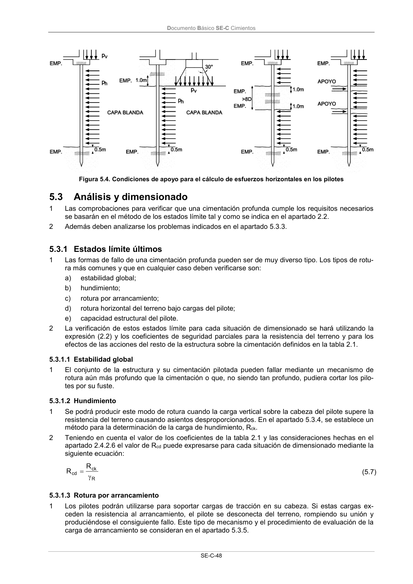

DB-SE-C Cimientos · edición 2019-12-20 · capa oficial
Documento DB-SE-C-oficial · SHA-256 del PDF a71133f4b0dca253e45ea3071c70f2a512354bcc5cd841bf89b1a502f567ac5e
Página física 53 de 165.
Copia fiel del PDF fuente · Fuente oficial
Ficha de la disposición en la fuente oficial
Formato: Texto de la página (Markdown)
Documento Básico SE-C Cimientos SE-C-48 Figura 5.4. Condiciones de apoyo para el cálculo de esfuerzos horizontales en los pilotes 5.3 Análisis y dimensionado 1 Las comprobaciones para verificar que una cimentación profunda cumple los requisitos necesarios se basarán en el método de los estados límite tal y como se indica en el apartado 2.2. 2 Además deben analizarse los problemas indicados en el apartado 5.3.3. 5.3.1 Estados límite últimos 1 Las formas de fallo de una cimentación profunda pueden ser de muy diverso tipo. Los tipos de rotu- ra más comunes y que en cualquier caso deben verificarse son: a) estabilidad global; b) hundimiento; c) rotura por arrancamiento; d) rotura horizontal del terreno bajo cargas del pilote; e) capacidad estructural del pilote. 2 La verificación de estos estados límite para cada situación de dimensionado se hará utilizando la expresión (2.2) y los coeficientes de seguridad parciales para la resistencia del terreno y para los efectos de las acciones del resto de la estructura sobre la cimentación definidos en la tabla 2.1. 5.3.1.1 Estabilidad global 1 El conjunto de la estructura y su cimentación pilotada pueden fallar mediante un mecanismo de rotura aún más profundo que la cimentación o que, no siendo tan profundo, pudiera cortar los pilo- tes por su fuste. 5.3.1.2 Hundimiento 1 Se podrá producir este modo de rotura cuando la carga vertical sobre la cabeza del pilote supere la resistencia del terreno causando asientos desproporcionados. En el apartado 5.3.4, se establece un método para la determinación de la carga de hundimiento, Rck. 2 Teniendo en cuenta el valor de los coeficientes de la tabla 2.1 y las consideraciones hechas en el apartado 2.4.2.6 el valor de Rcd puede expresarse para cada situación de dimensionado mediante la siguiente ecuación: R ck cd R R (5.7) 5.3.1.3 Rotura por arrancamiento 1 Los pilotes podrán utilizarse para soportar cargas de tracción en su cabeza. Si estas cargas ex- ceden la resistencia al arrancamiento, el pilote se desconecta del terreno, rompiendo su unión y produciéndose el consiguiente fallo. Este tipo de mecanismo y el procedimiento de evaluación de la carga de arrancamiento se consideran en el apartado 5.3.5.
